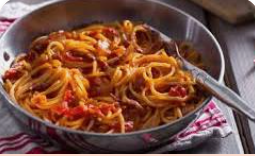

Spaghetti

Description
Spaghetti is a classic Italian dish made with long, thin pasta and a variety of sauces. It is a versatile meal that can be customized to suit any taste preferences.
Ingredients
- 1 pound spaghetti pasta
- 1/2 cup olive oil
- 4 cloves garlic, minced
- 1 can (28 ounces) crushed tomatoes
- 1 teaspoon dried basil leaves
- 1 teaspoon salt
- 1/4 teaspoon black pepper
- 1/4 cup chopped fresh parsley
- Grated Parmesan cheese, for serving
Steps
- Cook the spaghetti pasta according to the package instructions until al dente. Drain and set aside.
- In a large skillet, heat the olive oil over medium heat. Add the minced garlic and cook for 1-2 minutes until fragrant.
- Stir in the crushed tomatoes, dried basil, salt, and black pepper. Simmer the sauce for 15-20 minutes, stirring occasionally.
- Add the cooked spaghetti to the skillet and toss to coat the pasta with the sauce.
- Remove from heat and stir in the chopped fresh parsley.
- Serve the spaghetti hot, topped with grated Parmesan cheese if desired.
Home